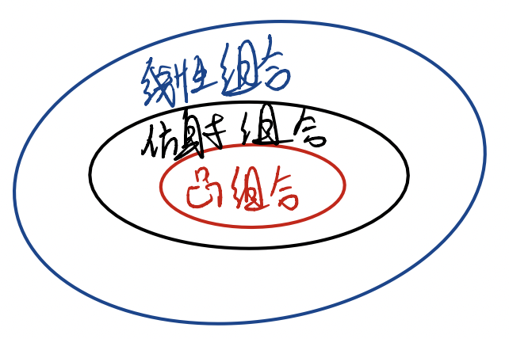
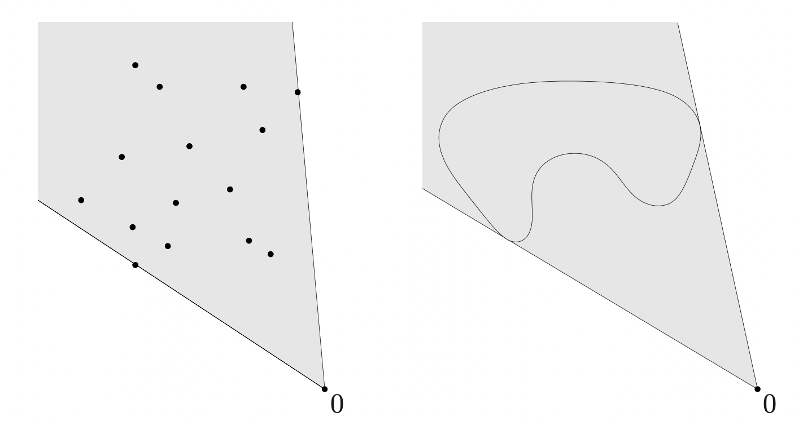
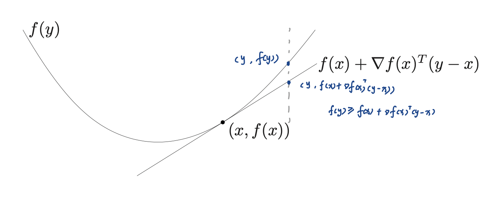
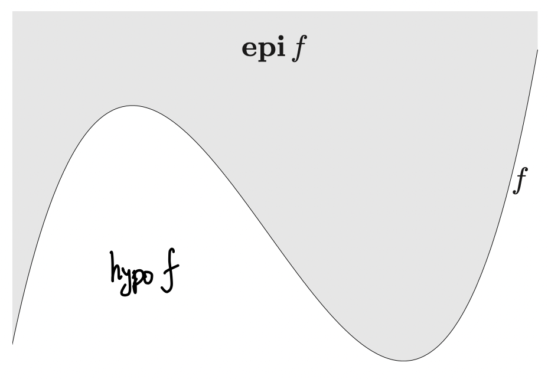

凸优化笔记-基本概念
$$minimize\ \ \ f_0(x)$$ $$subject\ to\ \ \ f_i(x)\le b_i, i = 1,…,m$$
凸优化问题： $$f_i(\alpha x+\beta y) \le \alpha f_i(x)+\beta f_i(y), \ x,y\in R^n, \alpha +\beta = 1,\alpha \ge 0,\beta\ge 0$$ 所有的函数都是凸函数时这个规划问题成为凸优化问题。
最小二乘问题
无约束条件下 $$minimize ||Ax-b||_2^2$$ $$A^TAx = A^Tb$$ $$x = (A^TA)^{-1}A^Tb$$ $$A\in R^{k\times n},k\ge n$$ 此处可以猜想一下，举例如k个点拟合一条直线。k个方程求解n个自变量。 带权的最小二乘 $$\Sigma w_i(a_i^Tx-b)$$
regularization $$\Sigma_{i=1}^k(a_i^Tx-b_i)^2 + \rho \Sigma_{i=1}^n x_i^2$$
线性规划 切比雪夫近似问题 $$minimize\ max_{i=1…k}\ |a_i^Tx-b_i|$$ 与最小二乘不同，不使用平方而是使用极大值——一阶矩？1范数 不可微 转化为 $$minimize\ t$$ $$subject\ to\ a_i^Tx-t\le b_i,-a_i^Tx-t\le-b_i$$ 内点法？
仿射
仿射集合：一个集合 C 在一个向量空间中被称为仿射集合，如果对于集合 CC 中的任意两个点 x 和 y，以及任意实数 α，其中 0≤α≤1，集合 CC 都包含点 (1−α)x+αy。
线性方程组的解集是一个仿射集合
$Ax=b$的解$x_1\not=x_2$
$$Ax_1=b,Ax_2=b$$ $$A(\alpha x_1 +\beta x_2) =A(\alpha x_1)+A(\beta x_2)= (\alpha+\beta)b = b$$
affine hull
1 | |
在欧几里得空间 Rn 中，一个集合 C 的仿射包（affine hull）是指所有包含在集合 C 中的点的仿射组合的集合。换句话说，它是通过 C中任意有限个点 x1,x2,…,xk的所有可能的线性组合的集合。 仿射包的理解？ $$\textbf{aff}\ C = \{\theta_1x_1+…+\theta_nx_n |x_k\in C,\Sigma\theta_i=1 \}$$
affine dimension
集合C的仿射维度定义为他的仿射包（？） 例：对单位圆上的点 $$\{x\in R^2|x_1^2+x_2^2 = 1 \}$$ 其仿射包是$R^2$（单位圆上的点通过线性组合可以产生）
相对内部（relative interior）
$$relint\ C = \{x\in C|B(x,r)\cap\textbf{aff}C\subseteq C\ for\ some\ r > 0\}$$ 就是这些点的邻域与aff C的交集仍然在C中。 $cl\ C \\ \ relint\ C$ 为边界
三维空间中的正方形
$$C = \{x\in R^3||x_1|\le1,|x_2|\le2,x_3 = 0\}$$ 其仿射包是什么呢？是由平面上的点组成的所有线性组合，那么自然是整个平面。那么dimension应该是2
凸集
$$x_1\in C,x_2\in C,0\le\theta\le1,\theta x_1+(1-\theta)x_2\in C$$ 则为凸集 仿射集都是凸集
凸组合：
$$\theta_1 x_1+\theta_2x_2+…+\theta_nx_n,\theta_i\ge0$$
凸包：
$$\textbf{conv} C = \{\theta_1x_1+…+\theta_kx_k|x_i\in C,\theta_i\ge 0,i=1,…,k,\theta_1+…+\theta_k = 1\}$$ 设 CC 是一个集合，那么 CC 的凸包 conv©conv© 是包含 CC 中所有点的最小凸集合。换句话说，conv©conv© 是包含 CC 的所有点的最小凸集合，且没有其他凸集合包含 CC 中的所有点。
线性组合、仿射组合与凸组合 对比一下，都是
$$\theta_1x_1+…+\theta_kx_k$$ 但是线性组合对$\theta_i$无要求，仿射要求$\Sigma\theta_i=1$，凸组合要求$\Sigma\theta_i=1$，且$\theta_i\ge 0$ 条件越来越强。 
锥集
对任意$x\in C$，都有$\theta x\in C$ 锥的顶点在原点。 凸锥====== 又凸又锥（比如一个立在原点的在最粗的地方切开的洋葱头？）
$$\theta_1x_1+…+\theta_kx_k,\theta_i\ge 0$$ conic combination 锥组合 锥包
$$\{\theta_1x_1+…+\theta_kx_k|x_i\in C,\theta_i\ge 0,i=1,…,k\}$$ C的锥包是能包含C的最小的锥集

超平面和半空间
超平面
$$a^Tx = b$$ 半空间
$$\{x|a^Tx\ge b\}$$
椭球
$$\epsilon = \{x|(x-x_c)^TP^{-1}(x-x_c)\le 1\}$$ P是对称且正定的，对称轴的长度由特征值的根号给出$\sqrt{\lambda_i}$
多面体
$$P=\{x|Ax≼ b,Cx = d\}$$ $$A = \begin{bmatrix}a_1^T\\.\\.\\.\\a_m^T\end{bmatrix},C = \begin{bmatrix}c_1^T\\.\\.\\.\\c_p^T\end{bmatrix}$$
单纯形
n维单纯形有n+1个顶点，如1维线段，2维三角形，三维四面体
单位单纯形$x\succeq0,\textbf 1^Tx\le1$ , n维度 概率单纯形$x\succeq 0,\textbf 1^Tx=1$, n-1维度
整半定锥
对称矩阵集合
$$S^n=\{X\in R^{n\times n}|X=X^T\}$$ 其维度为$(n+1)n/2$，可以想想有多少个独立的元素。
非负
$$S^n_+=\{X\in R^{n\times n}|X=X^T,X\succeq0\}$$ 正
$$S^n_++=\{X\in R^{n\times n}|X=X^T,X\succ 0\}$$ convex set:都是 convex cone:$S^n_++$不是，因为没有0
保凸性的操作
仿射变换、凸集的交集、求和、笛卡尔内积
设有线性矩阵不等式(LMI)
$$A(x)=x_1A_1+…+x_nA_n\preceq B$$ 其解集是convex的 仿射变换呢？
透视函数
降低维度 $P:R^{n+1}\to R^n$ 可以等效为一个小孔成像摄像机
接受平面位置在$x_3 = -1$ 小孔在原点，被测物$x_1,x_2,x_3$ 则相点为$-(x_1/x_3,x_2/x_3,1)$
$$dom P = R^n\times R_{++}$$ $$P(z,t)=z/t$$ 如果domP中的C是凸点，他的像 $$P©=\{P(x)|x\in C\}$$ 也是凸的
凸函数的条件
1阶判定条件
若f可微，当且仅当dom f凸，而且 $$f(y)\ge f(x)+\nabla f(x)^T(y-x)$$  其几何意义为函数上的点永远比某一条切线上的点高（或重合） （该形式为泰勒一阶展开）
2阶判定条件
$$\nabla f \succeq 0$$
- $R^n$上的范数都是凸的（由范数的三角不等式得到）
$$||u_1||+||u_2|| \ge ||u_1+u_2||$$
- 最大值函数是凸的
$$max(x) + max(y) >max(x+y)$$
- 二次overlinear函数
$$f(x,y) = x^2/y,y>0\ \ \ \ \ \ \nabla^2 f = \begin{bmatrix}2/y & -2x/y^2 \\-2x/y^2 & 2x^2/y^3\end{bmatrix}, det(\nabla^2 f) = \frac{2}{y^3}\begin{vmatrix}y^2&-xy\\-xy&2x^2\end{vmatrix}=\frac{2}{y^2}*(2x^2y^2-x^2y^2)>0$$
- 对数求和指数
$$f(x) = \log(exp(x_1)+exp(x_2)+…+exp(x_n))$$ $$\frac{\partial f}{\partial x_i} = \frac{\exp(x_i)}{\Sigma_{j =0} ^{j=n} \exp(x_j)}$$ $$z = (exp(x_1),exp(x_2),…,exp(x_n)),\ \Sigma_{j =0} ^{j=n} \exp(x_j)= \textbf{1}^Tz$$ 求Hessian矩阵 $$\frac{\partial^2f}{\partial x_i\partial x_j}=-\frac{\exp(x_i)\exp(x_j)}{(\textbf{1}^Tz)^2},i\not = j$$ $$\frac{\partial^2 f}{\partial x_i^2} = \frac{\exp(x_i)}{\textbf{1}^Tz} - \frac{\exp(x_i)^2}{(\textbf{1}^Tz)^2}$$ i=j时二阶导导前半部分可以组成一个对角阵列，后半部分和不等时的形式相同 $$\nabla^2f=\frac{1}{(\textbf{1}^Tz)^2 } ((\textbf{1}^Tz )diag(z)-zz^T)$$ 对任意v，有 $$v^T\nabla^2f\ v=\frac{1}{(\textbf{1}^Tz)^2 } (\Sigma_{j =0} ^{j=n} z_j \Sigma_{j =0} ^{j=n} v_j^2z_j-v^Tzz^Tv)= \frac{1}{(\textbf{1}^Tz)^2 } (\Sigma_{j =0} ^{j=n} z_j \Sigma_{j =0} ^{j=n} v_j^2z_j-(\Sigma_{j =0} ^{j=n}z_jv_j)^2)$$ 此处使用Cauchy-Schwarz不等式，$a_i = v_i\sqrt{z_i},b_i = \sqrt{z_i},(a^Ta) (b^Tb)\ge (a^Tb)^2$，可得上式不小于0。
Epigraph 外图
函数f的graph定义为
$$\{(x,f(x))|x\in \textbf{dom}\ f\}$$ 是$\textbf{R}^{n+1}$的子集 其epigraph为
$$\textbf{epi}\ f=\{ (x,t) | x\in \textbf{dom} \ f,f\le t\}$$ (‘Epi’ means ‘above’ so epigraph means ‘above the graph’.) 亚图为
$$\textbf{hypo}f = \{ (x,t) | x\in \textbf{dom} \ f,f\ge t \}$$
 这个图能建立凸集和凸函数的关系。当且仅当外图(epi f)是凸的时候函数是凸的。 当且仅当亚图(hypo f)是凸的时候函数是凹的
- 矩阵分式函数
$$f(x,Y) = x^TY^{-1}x,\ \ \ \textbf{dom} \ f=\textbf{R}^n\times\textbf{S}^n_{++}$$ $$\textbf{epi} f =\{(x,Y,t)|Y\succ0, f(x,Y)\le t \}$$ $$x^TY^{-1}x\le t$$ 此处需要用到舒尔补（Schur complement) $$M = \begin{bmatrix}A&B\\C&D\end{bmatrix}$$ 如果A可逆，则其舒尔补为$D-CA^{-1}B$ 代入有
$$M = \begin{bmatrix}Y&x\\x^T&t\end{bmatrix}\succeq 0$$